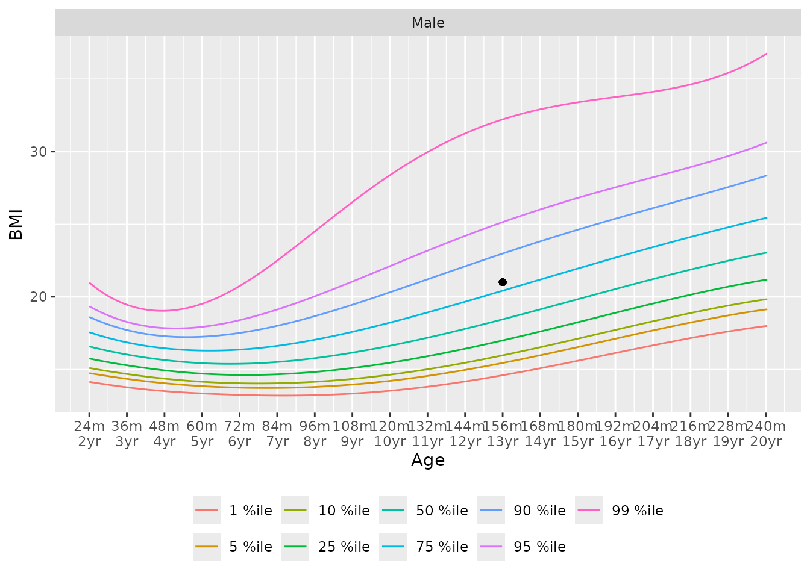
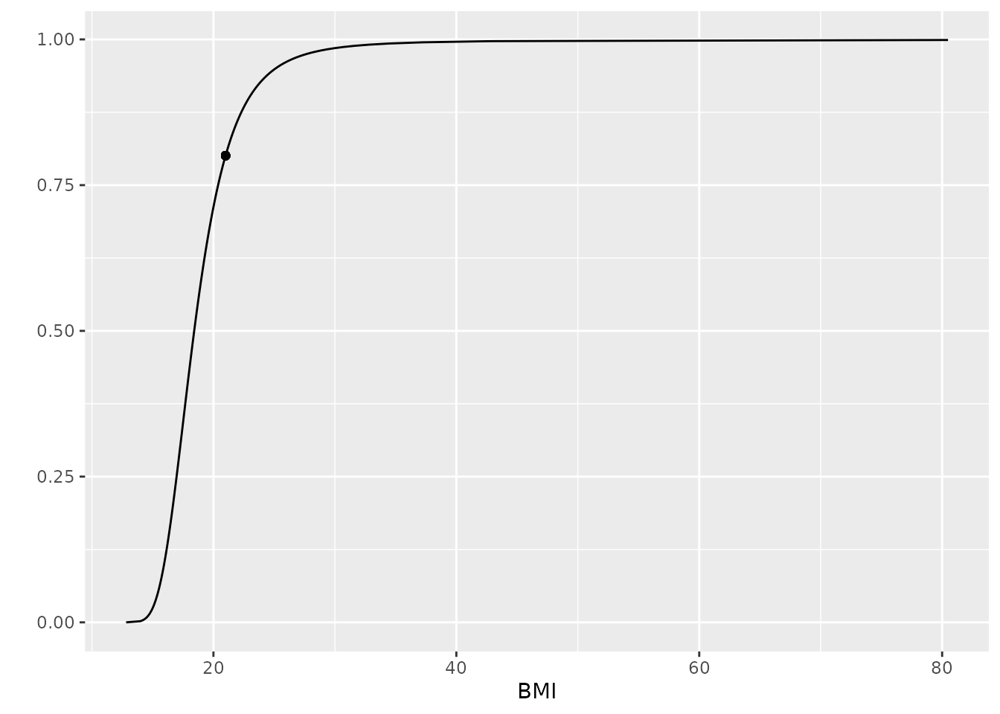

Introduction
Using the Percentile Data Files with LMS values provided by the CDC, and Child Growth Standards provided by the World Health Organization (WHO), we provide tools for finding quantiles, percentiles, or z-scores, for the following metrics:
- BMI for age
- head circumference for age
- stature for age
- height for age
- length for age
- weight for age
- weight for stature
- weight for height
- weight for length
All lengths/heights are in centimeters, ages in months, and weights in kilograms. Stature is used to refer both height and length; specific methods are provided for each.
Method - LMS
All methods use the published LMS parameters to define z-scores, percentiles, and quantiles for skewed distributions. L is a parameter, the Box-Cox transformation power; the median value, and a generalized coefficient of variation. For a given percentile or z-score, the corresponding physical measurement, is defined as
From this we can get the z-score for a given measurement
Percentiles are determined using the standard normal distribution of z-scores.
For all eight of the noted methods we provide a distribution function, quantile function, and function that returns z-scores.
Growth Standards
Each of the growth standard metrics have quantile, distribution, and
z-score function with the naming convention of
(q_<metric>), (p_<metric>), and
(z_<metric>), respectively.
Additionally, the function gs_chart for building growth
standard charts with percentile curves, and gs_cdf for
plotting the cumulative distribution function for a given set of
inputs.
Example
Find the distribution value for a 13 year (156 month) old male with a BMI of 21.
## [1] 0.8006439
## [1] 0.8006439 0.8541621An easy way to visualize the BMI distribution is to use the growth standard chart
gs_chart(metric = "bmi_for_age", male = 1, source = "CDC") +
ggplot2::geom_point(x = 13 * 12, y = 21, inherit.aes = FALSE)
and a cumulative distribution function
gs_cdf(metric = "bmi_for_age", male = 1, age = 13*12) +
ggplot2::geom_point(x = 21, y = p_bmi_for_age(21, male = 1, age = 13*12))
You can also easily get the z-score instead of the distribution value.
z_bmi_for_age(q = 21, male = 1, age = 13*12)
## [1] 0.8439234Find the median BMI quantile for a 48 month old female is:
q_bmi_for_age(p = 0.5, male = 0, age = 48) # default is CDC
## [1] 15.32168
q_bmi_for_age(p = 0.5, male = 0, age = 48, source = c("CDC", "WHO"))
## [1] 15.32168 15.26020